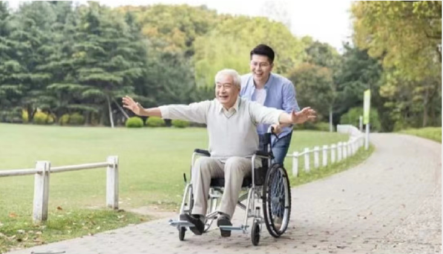
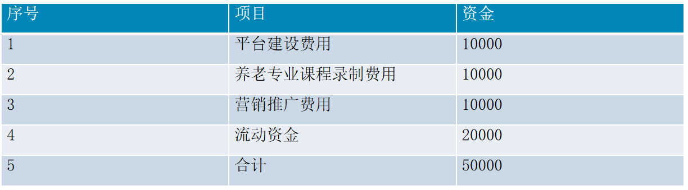
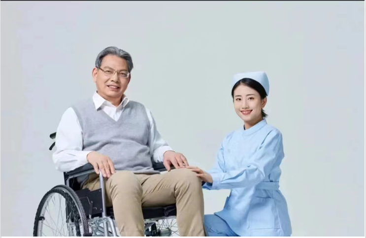

项目介绍
针对社会上存在的老龄化程度日益加深、养老服务需求日益增强和养老专业人员 稀缺等社会问题，加之社会闲置劳动力众多和老年群体希望老有所为的心理，项 目采利用互联网平台技术，建立线上互联网社区养老护理服务平台-一“琪琪”， 将社会闲置的且具有养老服务意愿和能力的人(不考虑年龄)进行人力资源的整合， 通过对其进行线上或线下形式的培训，合格者纳入养老扩理平台，为社会养老机 构或社区、居家老人提供专业化的养老护理服务，从而满足社会对养老护理专业 人员的需求。
进入 21 世纪后,全球人口老龄化的速度明显加快。据世界银行数据显示近60 年来世界“成长”的速度在不断加快。1960 年,全世界65 岁及以上人口占比 为4.97%,到2000年,世界人口老年比为6.89%,40年间仅增长了1.92%但进入 21世纪,到2019 年世界老年比已达到 9%,仅仅 19 年之间就“衰老了2.11%。 其主要原因是随着科技的进步,医疗条件与质量都得到了显著的提高、生活水 平得到了很大的提升,人们活得更久了。1960 年人类的平均寿命只有 52.6岁 ,而到了 2019 年全球人口平均寿命增长到了 72.3 岁,同时联合国预测随着 科技的进一步提升2030年人类的平均寿命将达到74.3 岁。而人口山生率正在不断的下跌 ,20 世纪60年代,全球总和生育率接近于5即每个育龄女性平均生育将近 5个小孩, 而如今这一数据已经下降到 2.4,根据联合国预测未来这一数字还会继续下降。
新时代背景下养老服务产业养老服务产业在发展过程中逐渐将第一二、三产业相 融合,拓宽医疗、文化、健康、旅游等渠道,提高养老服务质量，真正实现老有 所依、老有所养。目前我国养老服务产业发展仍不成熟,但随着社会发展，养老 服务需求量急剧增长,对创业就业发展而言,既是机遇又是挑战。新时代背景下 人们更加注重养老场所、养老金融、文化娱乐、基础设施建设以及养老产业日 常护理服务质量等。养老服务产业借助互联网信息技术,提供线上线下监督预警 服务,持续优化供给,以满足不同阶段老年人差异化需求,娱乐交友社交活动对 养老生活的重要性，不容忽视！退休后，很多老年人会感到孤独和无助，生活 变得单调乏味。然而，通过参加各种各样的社交活动，可以让老年人的生活更 加充实和有意义。
财务分析 要解决“有养老、无医疗”问题。医养结合，础，“医”是核心。在提供居家医疗 服务方面，要聚焦失能、央智、慢病、高龄、残疾等重点老年人，以家庭病床 和上门巡诊等为手段，确保这些人群在家中能够获得所需的医疗服务。创新 方式，为有需求的老年人提供便利的居家医疗服务。在增强社区医养结合服 务能力方面，要鼓励有条件的社区卫生服务机构等利用现有资源，内部改扩 建一批社区医养结合服务设施，重点为有困难的老年人提供服务。
帮助老年人和他们的看护人保持联系的最佳新工具之一是智能摄像头。安全 摄像头可以保护我们的家免受外部入侵者的侵害，也可以成为帮助看护人 照看亲人 (同时保持他们的独立性)不可或缺的工具。带摄像头的智能家居 设备可以帮助老年人进行日常活动监测，还可以帮助老年人与家人和朋友保持联系
社区养老将成为我国主流养老模式从中国传统文化观念来看，家庭养老是我国 最主流、最认可的养老模式是绝大多数老年人最希望的养老模式，但已不能 满足当前社会发展所需，因找寻更适宜的养老模式，解决当前矛盾。 结合西方发达国家经验，“家庭养老为主，机构养老为辅”的社区养老模式是 解决当前矛盾的唯一办法。该模式主要以社区为依托，依靠专业化服务，以 家庭为核心，为居住在家的老年人提供相关养老服务。该模式可有效减轻家庭